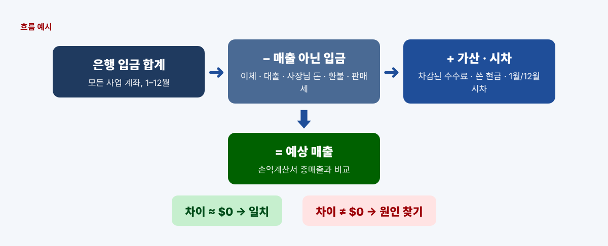
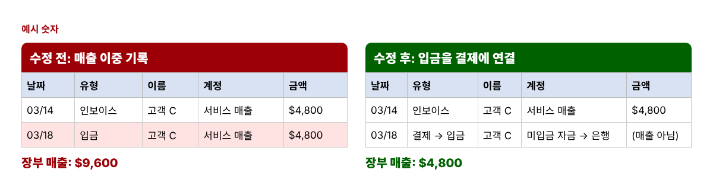
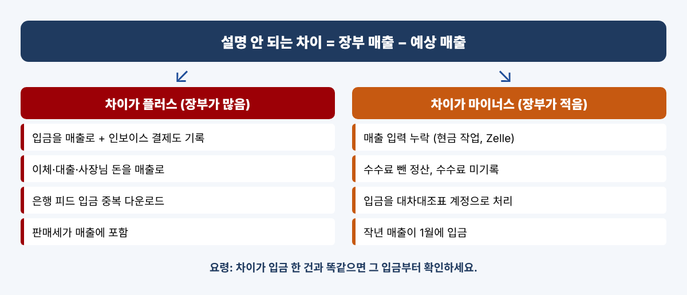

12월에 손익계산서(P&L)를 열어 보니 매출이 생각보다 너무 많거나, 반대로 통장에 넣은 돈보다 적게 나오는 경우가 있습니다. QuickBooks 사용자 커뮤니티에서 해마다 반복되는 질문도 바로 이것입니다. "매출이 두 배로 잡혀요", "인보이스와 은행 입금이 둘 다 매출로 나와요", "입금이랑 매출이 왜 안 맞죠?" 버튼 하나로 해결되는 일은 드뭅니다. 대신 간단한 대조로 풀 수 있습니다. 은행 입금에서 출발해 매출이 아닌 돈을 빼고, 은행에 안 들어온 매출을 더한 뒤 장부와 비교하는 방법입니다. 연말 전에 해 두면 세무 담당자에게 설명할 수 있는 숫자를 넘길 수 있습니다.
인보이스를 보내면서 은행 피드도 쓰는 사업, 카드 결제사나 마켓플레이스에서 수수료를 뗀 금액만 받는 사업, 개인 계좌와 사업 계좌 사이에 돈을 자주 옮기는 사장님께 특히 많이 생깁니다. 매출이 부풀려지면 벌지 않은 돈에 세금을 낼 수 있고, 매출이 빠지면 나중에 숫자의 근거를 묻는 질문에 답하기 어렵습니다. IRS도 입금 기록을 매출을 뒷받침하는 자료로 듭니다.
예상 매출 = 은행 입금 − 매출 아닌 입금 + 가산 항목 ± 시차, 그리고 차이 = 장부 매출 − 예상 매출입니다. 차이가 0에 가까우면 장부가 맞는 것입니다.

모든 사업 계좌의 12개월 명세서에서 "총 입금(total deposits)" 줄을 더합니다. 기준은 은행 숫자입니다. 엑셀이나 구글 시트에서 B2:B13에 월별 합계를 넣고 =SUM(B2:B13)을 입력하세요.
내 다른 계좌에서 온 이체, 대출·크레딧라인 입금, 사장님이 넣은 개인 돈, 거래처 환불·리베이트, 손님에게 받은 판매세를 찾아 적습니다. C열에 유형, D열에 금액을 넣으면 =SUMIF(C:C,"Loan",D:D)로 유형별 합계를, =SUM(D:D)로 뺄 총액을 구할 수 있습니다.
카드사와 마켓플레이스는 수수료를 떼고 정산하므로 실제 매출은 입금보다 큽니다. 이 수수료, 입금 전에 쓴 현금 매출, 12월 31일에 미입금 자금(Undeposited Funds)에 남아 있는 결제를 더합니다.
작년 매출이 올해 1월에 입금된 금액은 빼고, 올해 매출이 내년 1월에 입금된 금액은 더합니다. 손익계산서가 발생주의라면 1년간 늘어난 미수금(A/R)도 더합니다.
| 항목 (예시 숫자) | 금액 |
|---|---|
| 은행 입금 합계 | $186,450 |
| − 매출 아닌 입금 (이체, 대출, 사장님 돈, 환불) | ($22,850) |
| + 결제 수수료, 쓴 현금, 미입금 자금 | +$3,940 |
| − 작년 매출의 1월 입금 | ($3,400) |
| + 올해 매출의 내년 1월 입금 | +$2,750 |
| = 예상 매출 | $166,890 |
| 손익계산서 매출 | $171,690 |
| 차이 | +$4,800 |
엑셀에서는 예상 매출을 =B1-B2+B3-B4+B5, 차이를 =B7-B6로 구합니다. 차이가 플러스면 대개 이중 기록, 마이너스면 매출 누락이나 입금을 대차대조표 계정으로 처리한 경우입니다.
QuickBooks의 Transaction Detail by Account 보고서를 매출 계정만 골라 엑셀로 내보내고, A열 날짜·B열 유형·E열 금액으로 정리합니다. 아래 수식은 Deposit 줄마다 7일 안에 같은 금액의 판매가 있으면 표시해 줍니다. =IF(B2="Deposit",IF(COUNTIFS(B:B,"<>Deposit",E:E,E2,A:A,">="&A2-7,A:A,"<="&A2+7)>0,"CHECK",""),"")

온라인은 데스크톱과 화면 구성이 달라 순서대로 적었습니다.

| 원인 | 차이 | 해결 |
|---|---|---|
| 입금을 매출로 + 인보이스 결제도 기록 | 많음 | 입금을 결제에 Match |
| 내 계좌 간 이체를 매출로 | 많음 | 이체(Transfer)로 기록 |
| 대출금·사장님 돈을 매출로 | 많음 | 대출 계정 또는 자본 계정으로 |
| 은행 피드 입금 중복 | 많음 | 중복분 Exclude 또는 삭제 |
| 수수료 뺀 정산, 수수료 미기록 | 적음 | 입금에 수수료 줄 추가 |
| 매출 입력 누락 | 적음 | 매출 입력 후 입금에 Match |
몇 달러 정도의 차이(반올림, 소액 이자 시차)는 넘어가는 경우가 많습니다. 차이가 입금 한 건과 같거나 딱 떨어지는 숫자라면 꼭 확인하세요.
아닙니다. 이자는 장부 매출이자 입금이므로 따로 조정할 필요가 없습니다.
IRS에 따르면 2026년분은 결제 앱·마켓플레이스의 상품·서비스 대금이 $20,000 초과이고 200건 초과일 때 일반적으로 발행됩니다. 1099-K를 받지 않아도 사업 소득은 모두 신고해야 합니다.
입금이지만 매출은 아닙니다. 원래 비용을 줄이는 쪽으로 기록하고, 대조표에서는 매출 아닌 입금으로 적으세요.
위 과정을 그대로 해 주는 은행 입금 vs 매출 대조 키트는 아래 무료 키트 다운로드에서 가입 없이 무료로 받으실 수 있습니다(엑셀 + PDF 가이드).
이 글은 교육용 정보이며 세무·법률·회계 자문이 아닙니다. 입금을 세금 신고에 어떻게 보고할지는 상황에 따라 다르니 자격 있는 세무 전문가와 상의하세요. QuickBooks Online 메뉴 이름은 자주 바뀌어 화면과 다를 수 있습니다. QuickBooks is a registered trademark of Intuit Inc.; not affiliated with or endorsed by Intuit. (QuickBooks는 Intuit Inc.의 등록상표이며, 이 글은 Intuit과 제휴·보증 관계가 없습니다.)